The analysis module is used to analyze molecular trajectories generated by the NWChem molecular dynamics module, or partial charges generated by the NWChem electrostatic potential fit module. This module should not de run in parallel mode.
Directives for the analysis module are read from an input deck,
analysis ... end
The analysis is performed as post-analysis of trajectory files through using the task directive
task analysisor
task analyze
system <string systemid>_<string calcid>
where the strings systemid and calcid are user defined names
for the chemical system and the type of calculation to ber performed,
respectively. These names are used to derive the filenames used for the
calculation. The topoly file used will be systemid.top, while all
other files are named systemid_calcid.ext.
Most analyses require a set of reference coordinates. These coordinates are read from a NWChem restart file by the directive,
reference <string filename>
where filename is the name of an existing restart file. This input directive is required.
The trajectory file(s) to be analyzed are specified with
file <string filename> [<integer firstfile> <integer lastfile>]
where filename is an existing trj trajectory file. If firstfile and lastfile are specified, the specified filename needs to have a ? wild card character that will be substituted by the 3-character integer number from firstfile to lastfile, and the analysis will be performed on the series of files. For example,
file tr_md?.trj 3 6
will instruct the analysis to be performed on files tr_md003.trj, tr_md004.trj, tr_md005.trj and tr_md006.trj.
From the specified files the subset of frames to be analyzed is specified by
frames [<integer firstframe default 1>] <integer lastframe> \
[<integer frequency default 1>]
For example, to analyze the first 100 frames from the specified trajectory files, use
frames 100
To analyze every 10-th frame between frames 200 and 400 recorded on the specified trajectory files, use
frames 200 400 10
Solute coordinates of the reference set and ech subsequent frame read from a trajectory file are translated to have the center of geometry of the specified solute molecule at the center of the simulation box. After this translation all molecules are folded back into the box according to the periodic boundary conditions. The directive for this operation is
center <integer imol> [<integer jmol default imol>]
Coordinates of each frame read from a trajectory file can be rotated using
rotate ( off | x | y | z ) <real angle units degrees>
If center was defined, rotation takes place after
the system has been centered. The rotate directives
only apply to frames read from the trajectory files, and not
to the reference coordinates. Upto 100 rotate directives
can be specified, which will be carried out in the order in which
they appear in the input deck. rotate off cancels all
previously defined rotate directives.
To perform a hydrogen bond analysis:
hbond [distance [[<real rhbmin default 0.0>] <real rhbmin>]] \
[angle [<real hbdmin> [ <real hbdmax default pi>]]] \
[solvent [<integer numwhb>]]
Analyses can be applied to a selection of solute atoms and solvent molecules. The selection is determined by
select ( [ super ] [ { <string atomlist> } ] |
solvent <real range> | save <string filename> | read <string filename> )
where {atomlist} is the set of atom names selected from the specified residues.
By default all solute atoms are selected. When keyword super is specified the selecion
applies to the superimposition option.
The selected atoms are specified by the string atomlist which
takes the form
[{isgm [ - jsgm ] [,]} [:] [{aname[,]}]
where isgm and jsgm are the first and last residue numbers,
and aname is an atom name. In the atomname a question mark may be
used as a wildcard character.
For example, all protein backbone atoms are selected by
select _N,_CA,_C
To select the backbone atoms in residues 20 to 80 and 90 to 100 only, use
select 20-80,90-100:_N,_CA,_C
This selection is reset to apply to all atoms after each file directive.
Solvent molecules within range nm from any selected solute atom
are selected by
select solvent <real range>
After solvent selection, the solute atom selection is reset to being all selected.
The current selection can be saved to, or read from a file using the
save and read keywords, respectively.
Some analysis are performed on groups of atoms. These groups of atoms are defined by
define <integer igroup> [<real rsel>] [solvent] { <string atomlist> }
The string atom in this definitions again takes the form
[{isgm [ - jsgm ] [,]} [:] [{aname[,]}]
where isgm and jsgm are the first and last residue numbers,
and aname is an atom name. In the atomname a question mark may be
used as a wildcard character.
Multiple define directive can be used to define a single set of atoms.
To analyze the root mean square deviation from the specified reference coordinates:
rmsd
To analyze protein 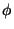- and backbone hydrogen bonding:
ramachandran
To define a distance:
distance <integer ibond> <string atomi> <string atomj>
To define an angle:
angle <integer iangle> <string atomi> <string atomj> <string atomk>
To define a torsion:
torsion <integer itorsion> <string atomi> <string atomj> \
<string atomk> <string atoml>
To define a vector:
vector <integer ivector> <string atomi> <string atomj>
The atom string in these definitions takes the form
<integer segment>:<string atomname> | w<integer molecule>:<string atomname>
for solute and solvent atom specification, respectively.
To define charge distribution in z-direction:
charge_distribution <integer bins>
Analyses on atoms in a predefined group are specified by
group [<integer igroup> [periodic <integer ipbc>] \
( local [<real rsel default 0.0>] [<real rval default rsel>]
<string function> )
where igroup specifies the group of atoms defined with a
define directive. Keyword periodic can be used to
specify the periodicity, ipbc=1 for periodicity in z,
ipbc=2 for periodicity in x and y, and
ipbc=3 for periodicity in x, y and z.
Currently the only option is local which prints all selected
solute atom with a distance between rsel and rval from
the atoms defined in igroup. The actual analysis is done by the
scan deirective. A formatted report is printed from
group analyses using
report <string filename> local
Analyses on pairs of atoms in predefined groups are specified by
groups [<integer igroup> [<integer jgroup>]] [periodic [<integer ipbc default 3>]] \
<string function> [<real value1> [<real value2>]] [<string filename>]
where 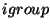 and 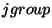 are groups of atoms defined with a
define directive. Keyword periodic specifies that
periodic boundary conditions need to be applied in 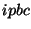 dimensions.
The type of analysis is define by 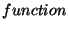, 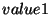 and 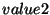.
If 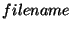 is specified, the analysis is applied to the reference
coordinates and written to the specified file. If no filename is
given, the analysis is applied to the specified trajectory and
performed as part of the scan directive.
Implemented analyses defined by
<string function> [<real value1> [<real value2>]] include
distance to calculate the distance between the centers of geometry of the
two specified groups of atoms, and
distances to calculate all atomic distances between atoms
in the specified groups that lie between and .
Coordinate histograms are specified by
histogram <integer idef> [<integer length>] zcoordinate <string filename>
where 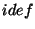 is the atom group definition number, 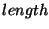 is the size
of the histogram, zcoordinate is the currently only histogram option,
and is the filname to which the histogram is written.
Order parameters are evalated using
order <integer isel> <integer jsel> <string atomi> <string atomj>This is an experimental feature.
To write the average coordinates of a trajectory
average [super] <string filename>
To perform the coordinate analysis:
scan [ super ] <string filename>
which will create, depending on the specified analysis options
files filename.rms and filename.ana. After the scan directive
previously defined coordinate analysis options are all reset.
Optional keyword super specifies that frames read from
the trajectory file(s) are superimposed to the reference structure
before the analysis is performed.
Essential dynamics analysis is performed by
essential
This can be followed by one or more
project <integer vector> <string filename>
to project the trajectory onto the specified vector. This will create files filename with extensions frm or trj, val, vec, _min.pdb and _max.pdb, with the projected trajectory, the projection value, the eigenvector, and the minimum and maximum projection structure.
For example, an essential dynamics analysis with projection onto the first vector generating files firstvec.{trj, val, vec, _min.pdb, _max.pdb} is generated by
essential project 1 firstvec
To write a single frame in PDB or XYZ format, use
write [<integer number default 1>] [super] [solute] <string filename>
To copy the selected frames from the specified trejctory file(s), onto a new file, use
copy [solute] [rotate <real tangle>] <string filename>
To superimpose the selected atoms for each specified frame to the reference coordinates before copying onto a new file, use
super [solute] [rotate <real tangle>] <string filename>
The rotate directive specifies that the structure will make
a full ratation every tangle ps. This directive only has effect when
writing povray files.
The format of the new file is determined from the extension, which can be one of
| amb | AMBER formatted trajectory file (obsolete) |
| arc | DISCOVER archive file |
| bam | AMBER unformatted trajectory file |
| crd | AMBER formatted trajectory file |
| dcd | CHARMM formatted trajectory file |
| esp | gOpenMol formatted electrostatic potential files |
| frm | ecce frames file (obsolete) |
| pov | povray input files |
| trj | NWChem trajectory file |
If no extension is specified, a trj formatted file will be written.
A special tag can be added to frm and pov formatted files using
label <integer itag> <string tag> [ <real rval default 1.0> ] \\
[ <integer iatag> [ <integer jatag default iatag> ] [ <real rtag default 0.0> ] ]
[ <string anam> ]
where tag number 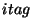 is set to the string 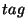 for all atoms anam within a distance 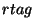 from segments 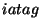 through 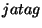. A question mark can be used in anam as a wild card character.
Atom rendering is specified using
render ( cpk | stick ) [ <real rval default 1.0> ] \\
[ <integer iatag> [ <integer jatag default iatag> ] [ <real rtag default 0.0> ] ]
[ <string anam> ]
for all atoms anam within a distance from segments through , and a scaling factor of 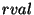. A question mark can be used in anam as a wild card character.
Atom color is specified using
color ( <string color> | atom ) \\
[ <integer iatag> [ <integer jatag default iatag> ] [ <real rtag default 0.0> ] ]
[ <string anam> ]
for all atoms anam within a distance from segments through . A question mark can be used in anam as a wild card character.
For example, to display all carbon atoms in segments 34 through 45 in green and rendered cpk in povray files can be specified with
render cpk 34 45 _C?? color green 34 45 _C??
Coordinates written to a pov file can be scaled using
scale <real factor>
A zero or negative scaling factor will scale the coordinates to lie within [-1,1] in all dimensions.
The cpk rendering in povray files can be scaled by
cpk <real factor default 1.0>
The stick rendering in povray files can be scaled by
stick <real factor default 1.0>
The initial sequence number of esp related files is defined by
index <integer index default 1>
A file in plt format of the electrostatic potential resulting from partial charges generated by the ESP module is generated by the command
esp [ <integer spacing default 10> ] \
[ <real rcut default 1.0> ] [periodic [<integer iper default 3>]] \
[ <string xfile> [ <string pltfile> ] ]
The input coordinates are taken from the xyzq file that can
be generated from a rst by the prepare module. Parameter
spacing specifies the number of gridpoints per nm, rcut specifies
extent of the charge grid beyond the molecule.
Periodic boundaries will be used if periodic
is specified. If iper is set to 2, periodic boundary
conditions are applied in x and y dimensions only. If periodic
is specified, a negative value of rcut will extend the grid
in the periodic dimensions by abs(rcut), otherwise this value
will be ignored in the periodic dimensions.
The resulting plt formatted file pltfile can be
viewed with the gOpenMol program. The resulting electrostatic
potential grid is in units of kJ mol e
e .
If no files are specified, only the parameters are set. This
analysis applies to solute(s) only.
.
If no files are specified, only the parameters are set. This
analysis applies to solute(s) only.